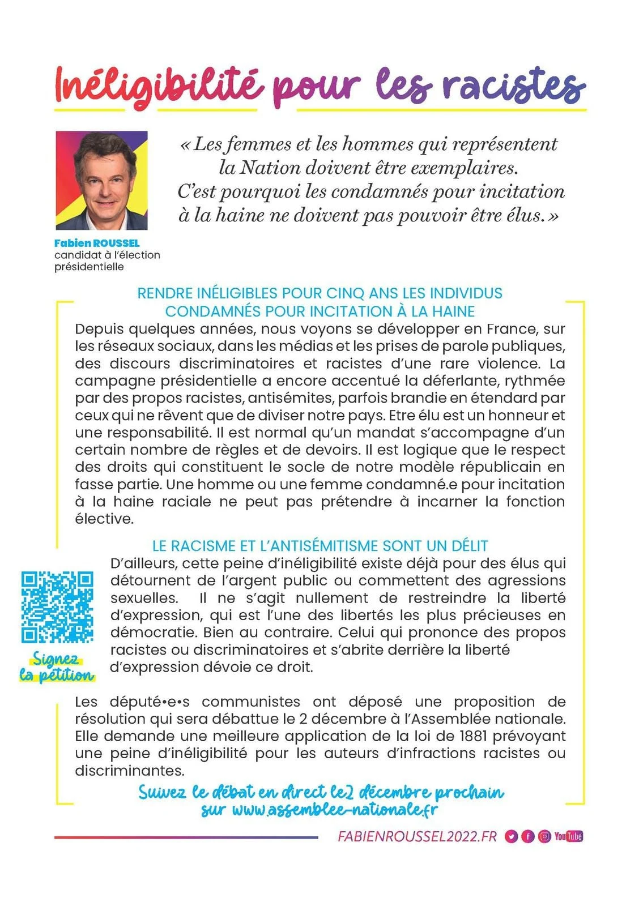

Publication d’archives
Racistes, hors de nos urnes !
Date indiquée par Facebook · 29 novembre 2021
Texte conservé avec la publication
Contexte du dossier
Le 29 novembre 2021, la page soutient la proposition d’inéligibilité des personnes condamnées pour propos racistes ou antisémites. Le 4 février 2022, elle présente le travail de seize historiens contre les falsifications d’Éric Zemmour et les entretiens réalisés par L’Humanité. Le 18 février, elle relaie l’appel du collectif StopBolloré pour une information libre. Celui-ci critique la concentration économique des médias et ses effets sur le pluralisme. Ces démarches attaquent trois ressorts de la banalisation : l’impunité politique, la déformation du passé et la mise de l’information sous la dépendance de fortunes privées.

Sources
Archive rouge · export Facebook · AR-0002-FB-02002
À lire aussi · La Laïcité...117 ans plus tard